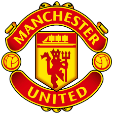
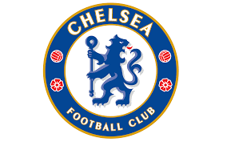
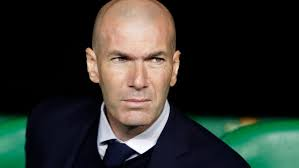

los 10 mejores equipos de la FIFA
los 10 mejores equipos de la FIFA
- paris saint germen .
- manchester city.

- manchester united .
- byer munchen.

- liverpool .

- real Madrid.

- chelsea .
- borissia dortmund.
- atletico de Madrid .

- barcelona.

top 5 entrenadores
- enzo barzot .
- sepp piontec.
- michel hidalgo .
- terry vernabales .
- guy this.
 los mejoers mundiales de la historia
los mejoers mundiales de la historia